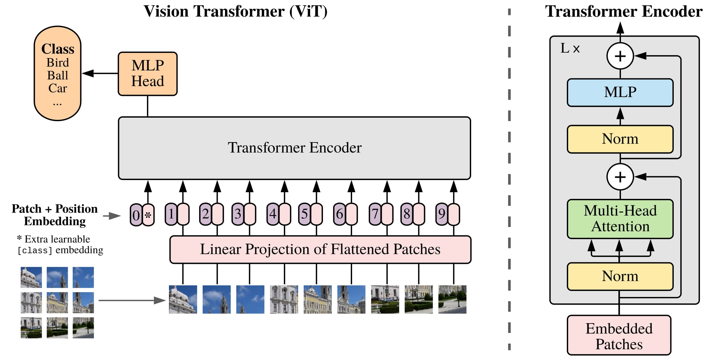

ViT architecture. Taken from the original paper.
Vision Transformer (ViT) Models for Image and Time Series Classification
ViTs from scratch in PyTorch and fine-tuned pre-trained ViT model using ImageNet weights on the Caltech101 dataset, achieving a remarkable 94% test accuracy.